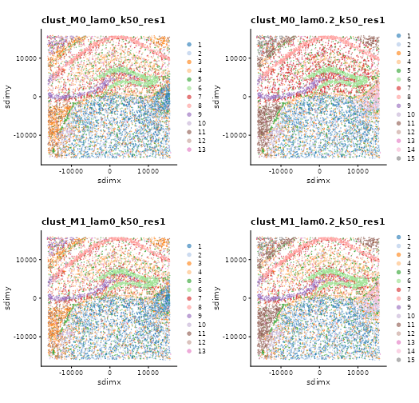

vignettes/parameter-selection.Rmd
parameter-selection.RmdHere, we demonstrate a grid search of clustering parameters with a
mouse hippocampus VeraFISH dataset. BANKSY currently provides
four algorithms for clustering the BANKSY matrix with
clusterBanksy: Leiden (default), Louvain, k-means, and
model-based clustering. In this vignette, we run only Leiden clustering.
See ?clusterBanksy for more details on the parameters for
different clustering methods.
The dataset comprises gene expression for 10,944 cells and 120 genes
in 2 spatial dimensions. See ?Banksy::hippocampus for more
details.
# Load libs
library(Banksy)
library(SummarizedExperiment)
library(SpatialExperiment)
library(scuttle)
library(scater)
library(cowplot)
library(ggplot2)
# Load data
data(hippocampus)
gcm <- hippocampus$expression
locs <- as.matrix(hippocampus$locations)Here, gcm is a gene by cell matrix, and
locs is a matrix specifying the coordinates of the centroid
for each cell.
head(gcm[,1:5])
#> cell_1276 cell_8890 cell_691 cell_396 cell_9818
#> Sparcl1 45 0 11 22 0
#> Slc1a2 17 0 6 5 0
#> Map 10 0 12 16 0
#> Sqstm1 26 0 0 2 0
#> Atp1a2 0 0 4 3 0
#> Tnc 0 0 0 0 0
head(locs)
#> sdimx sdimy
#> cell_1276 -13372.899 15776.37
#> cell_8890 8941.101 15866.37
#> cell_691 -14882.899 15896.37
#> cell_396 -15492.899 15835.37
#> cell_9818 11308.101 15846.37
#> cell_11310 14894.101 15810.37Initialize a SpatialExperiment object and perform basic quality control. We keep cells with total transcript count within the 5th and 98th percentile:
se <- SpatialExperiment(assay = list(counts = gcm), spatialCoords = locs)
colData(se) <- cbind(colData(se), spatialCoords(se))
# QC based on total counts
qcstats <- perCellQCMetrics(se)
thres <- quantile(qcstats$total, c(0.05, 0.98))
keep <- (qcstats$total > thres[1]) & (qcstats$total < thres[2])
se <- se[, keep]Next, perform normalization of the data.
# Normalization to mean library size
se <- computeLibraryFactors(se)
aname <- "normcounts"
assay(se, aname) <- normalizeCounts(se, log = FALSE)BANKSY has a few key parameters. We describe these below.
For characterising neighborhoods, BANKSY computes the
weighted neighborhood mean (H_0) and the azimuthal Gabor
filter (H_1), which estimates gene expression gradients.
Setting compute_agf=TRUE computes both H_0 and
H_1.
k_geom specifies the number of neighbors used to compute
each H_m for m=0,1. If a single value is
specified, the same k_geom will be used for each feature
matrix. Alternatively, multiple values of k_geom can be
provided for each feature matrix. Here, we use k_geom[1]=15
and k_geom[2]=30 for H_0 and H_1
respectively. More neighbors are used to compute gradients.
For datasets generated using Visium v1/v2, use
k_geom=18 (or k_geom <- c(18, 18) if
compute_agf = TRUE), since that corresponds to taking as
neighbourhood two concentric rings of spots around each
spot.
We compute the neighborhood feature matrices using normalized
expression (normcounts in the se object).
k_geom <- c(15, 30)
se <- computeBanksy(se, assay_name = aname, compute_agf = TRUE, k_geom = k_geom)
#> Computing neighbors...
#> Spatial mode is kNN_median
#> Parameters: k_geom=15
#> Done
#> Computing neighbors...
#> Spatial mode is kNN_median
#> Parameters: k_geom=30
#> Done
#> Computing harmonic m = 0 with 15 neighbors
#> Done
#> Computing harmonic m = 1 with 30 neighbors
#> Centering
#> DonecomputeBanksy populates the assays slot
with H_0 and H_1 in this instance:
se
#> class: SpatialExperiment
#> dim: 120 10205
#> metadata(1): BANKSY_params
#> assays(4): counts normcounts H0 H1
#> rownames(120): Sparcl1 Slc1a2 ... Notch3 Egfr
#> rowData names(0):
#> colnames(10205): cell_1276 cell_691 ... cell_11635 cell_10849
#> colData names(4): sample_id sdimx sdimy sizeFactor
#> reducedDimNames(0):
#> mainExpName: NULL
#> altExpNames(0):
#> spatialCoords names(2) : sdimx sdimy
#> imgData names(1): sample_idThe lambda parameter is a mixing parameter in
[0,1] which determines how much spatial information is
incorporated for downstream analysis. With smaller values of
lambda, BANKY operates in cell-typing mode, while
at higher levels of lambda, BANKSY operates in
domain-finding mode. As a starting point, we recommend
lambda=0.2 for cell-typing and lambda=0.8 for
zone-finding, except for datasets generated using the Visium
v1/v2 technology, for which we recommend
lambda=0.2 for domain finding. See the note in the tutorial
on the main page
for more info.
Here, we run lambda=0 which corresponds to non-spatial
clustering, and lambda=0.2 for spatially-informed
cell-typing. We compute PCs with and without the AGF
(H_1).
lambda <- c(0, 0.2)
se <- runBanksyPCA(se, use_agf = c(FALSE, TRUE), lambda = lambda, seed = 1000, lazy = FALSE)
#> Using seed=1000
#> Using seed=1000
#> Using seed=1000
#> Using seed=1000runBanksyPCA populates the reducedDims
slot, with each combination of use_agf and
lambda provided.
reducedDimNames(se)
#> [1] "PCA_M0_lam0" "PCA_M0_lam0.2" "PCA_M1_lam0" "PCA_M1_lam0.2"Next, we cluster the BANKSY embedding with Leiden graph-based
clustering. This admits two parameters: k_neighbors and
resolution. k_neighbors determines the number
of k nearest neighbors used to construct the shared nearest neighbors
graph. Leiden clustering is then performed on the resultant graph with
resolution resolution. For reproducibiltiy we set a seed
for each parameter combination.
k <- 50
res <- 1
se <- clusterBanksy(se, use_agf = c(FALSE, TRUE), lambda = lambda, k_neighbors = k, resolution = res, seed = 1000)
#> Using seed=1000
#> Using seed=1000
#> Using seed=1000
#> Using seed=1000clusterBanksy populates colData(se) with
cluster labels:
To compare clustering runs visually, different runs can be relabeled
to minimise their differences with connectClusters:
se <- connectClusters(se)
#> clust_M1_lam0_k50_res1 --> clust_M0_lam0_k50_res1
#> clust_M0_lam0.2_k50_res1 --> clust_M1_lam0_k50_res1
#> clust_M1_lam0.2_k50_res1 --> clust_M0_lam0.2_k50_res1Visualise spatial coordinates with cluster labels.
cnames <- colnames(colData(se))
cnames <- cnames[grep("^clust", cnames)]
cplots <- lapply(cnames, function(cnm) {
plotColData(se, x = "sdimx", y = "sdimy", point_size = 0.1, colour_by = cnm) +
coord_equal() +
labs(title = cnm) +
theme(legend.title = element_blank()) +
guides(colour = guide_legend(override.aes = list(size = 2)))
})
plot_grid(plotlist = cplots, ncol = 2)
Compare all cluster outputs with compareClusters. This
function computes pairwise cluster comparison metrics between the
clusters in colData(se) based on adjusted Rand index
(ARI):
compareClusters(se, func = "ARI")
#> clust_M0_lam0_k50_res1 clust_M0_lam0.2_k50_res1
#> clust_M0_lam0_k50_res1 1.000 0.67
#> clust_M0_lam0.2_k50_res1 0.670 1.00
#> clust_M1_lam0_k50_res1 1.000 0.67
#> clust_M1_lam0.2_k50_res1 0.747 0.87
#> clust_M1_lam0_k50_res1 clust_M1_lam0.2_k50_res1
#> clust_M0_lam0_k50_res1 1.000 0.747
#> clust_M0_lam0.2_k50_res1 0.670 0.870
#> clust_M1_lam0_k50_res1 1.000 0.747
#> clust_M1_lam0.2_k50_res1 0.747 1.000or normalized mutual information (NMI):
compareClusters(se, func = "NMI")
#> clust_M0_lam0_k50_res1 clust_M0_lam0.2_k50_res1
#> clust_M0_lam0_k50_res1 1.000 0.741
#> clust_M0_lam0.2_k50_res1 0.741 1.000
#> clust_M1_lam0_k50_res1 1.000 0.741
#> clust_M1_lam0.2_k50_res1 0.782 0.915
#> clust_M1_lam0_k50_res1 clust_M1_lam0.2_k50_res1
#> clust_M0_lam0_k50_res1 1.000 0.782
#> clust_M0_lam0.2_k50_res1 0.741 0.915
#> clust_M1_lam0_k50_res1 1.000 0.782
#> clust_M1_lam0.2_k50_res1 0.782 1.000See ?compareClusters for the full list of comparison
measures.
Vignette runtime:
#> Time difference of 37.24351 secs
options(width = 120)
sessioninfo::session_info()
#> ─ Session info ───────────────────────────────────────────────────────────────────────────────────────────────────────
#> setting value
#> version R version 4.5.1 (2025-06-13)
#> os Rocky Linux 9.8 (Blue Onyx)
#> system x86_64, linux-gnu
#> ui X11
#> language en
#> collate C.UTF-8
#> ctype C.UTF-8
#> tz America/Los_Angeles
#> date 2026-09-29
#> pandoc 3.11 @ /gpfs/scrubbed/jxlee/conda/envs/banksy-bench-2/bin/ (via rmarkdown)
#> quarto NA
#>
#> ─ Packages ───────────────────────────────────────────────────────────────────────────────────────────────────────────
#> package * version date (UTC) lib source
#> abind 1.4-8 2024-09-12 [1] CRAN (R 4.5.1)
#> aricode 1.1.0 2026-05-13 [1] CRAN (R 4.5.3)
#> Banksy * 1.9.4 2026-09-29 [1] local (/gpfs/projects/h2lab/jxlee/genome-institute/Banksy)
#> beachmat 2.26.0 2025-10-29 [1] Bioconductor 3.22 (R 4.5.2)
#> beeswarm 0.4.0 2021-06-01 [1] CRAN (R 4.5.1)
#> Biobase * 2.70.0 2025-10-29 [1] Bioconductor 3.22 (R 4.5.2)
#> BiocGenerics * 0.56.0 2025-10-29 [1] Bioconductor 3.22 (R 4.5.2)
#> BiocManager 1.30.27 2025-11-14 [1] CRAN (R 4.5.2)
#> BiocNeighbors 2.4.0 2025-10-29 [1] Bioconductor 3.22 (R 4.5.2)
#> BiocParallel 1.44.0 2025-10-29 [1] Bioconductor 3.22 (R 4.5.2)
#> BiocSingular 1.26.1 2025-11-17 [1] Bioconductor 3.22 (R 4.5.2)
#> BiocStyle * 2.38.0 2025-10-29 [1] Bioconductor 3.22 (R 4.5.2)
#> bookdown 0.47 2026-06-16 [1] CRAN (R 4.5.3)
#> bslib 0.12.0 2026-08-04 [1] CRAN (R 4.5.3)
#> cachem 1.1.0 2024-05-16 [1] CRAN (R 4.5.1)
#> cli 3.6.6 2026-04-09 [1] CRAN (R 4.5.3)
#> codetools 0.2-20 2024-03-31 [1] CRAN (R 4.5.1)
#> cowplot * 1.2.0 2025-07-07 [1] CRAN (R 4.5.1)
#> data.table 1.18.6.1 2026-08-24 [1] CRAN (R 4.5.3)
#> dbscan 1.2.6 2026-08-25 [1] CRAN (R 4.5.3)
#> DelayedArray 0.36.1 2026-03-31 [1] Bioconductor 3.22 (R 4.5.3)
#> desc 1.4.3 2023-12-10 [1] CRAN (R 4.5.1)
#> dichromat 2.0-1 2026-07-22 [1] CRAN (R 4.5.3)
#> digest 0.6.39 2025-11-19 [1] CRAN (R 4.5.2)
#> dplyr 1.2.1 2026-04-03 [1] CRAN (R 4.5.3)
#> evaluate 1.0.5 2025-08-27 [1] CRAN (R 4.5.1)
#> farver 2.1.2 2024-05-13 [1] CRAN (R 4.5.1)
#> fastmap 1.2.0 2024-05-15 [1] CRAN (R 4.5.1)
#> fs 2.1.0 2026-04-18 [1] CRAN (R 4.5.3)
#> generics * 0.1.4 2025-05-09 [1] CRAN (R 4.5.1)
#> GenomicRanges * 1.62.1 2025-12-08 [1] Bioconductor 3.22 (R 4.5.2)
#> ggbeeswarm 0.7.3 2025-11-29 [1] CRAN (R 4.5.2)
#> ggplot2 * 4.0.3 2026-04-22 [1] CRAN (R 4.5.3)
#> ggrepel 0.9.8 2026-03-17 [1] CRAN (R 4.5.3)
#> glue 1.8.1 2026-04-17 [1] CRAN (R 4.5.3)
#> gridExtra 2.3.1 2026-06-25 [1] CRAN (R 4.5.3)
#> gtable 0.3.6 2024-10-25 [1] CRAN (R 4.5.1)
#> htmltools 0.5.9 2025-12-04 [1] CRAN (R 4.5.2)
#> htmlwidgets 1.6.4 2023-12-06 [1] CRAN (R 4.5.1)
#> igraph 2.3.3 2026-06-26 [1] CRAN (R 4.5.3)
#> IRanges * 2.44.0 2025-10-29 [1] Bioconductor 3.22 (R 4.5.2)
#> irlba 2.3.7 2026-01-30 [1] CRAN (R 4.5.2)
#> jquerylib 0.1.4 2021-04-26 [1] CRAN (R 4.5.1)
#> jsonlite 2.0.0 2025-03-27 [1] CRAN (R 4.5.1)
#> knitr 1.52 2026-09-06 [1] CRAN (R 4.5.3)
#> labeling 0.4.3 2023-08-29 [1] CRAN (R 4.5.1)
#> lattice 0.23-1 2026-08-12 [1] CRAN (R 4.5.3)
#> leidenAlg 1.1.8 2026-05-31 [1] CRAN (R 4.5.3)
#> lifecycle 1.0.5 2026-01-08 [1] CRAN (R 4.5.2)
#> magick 2.9.1 2026-02-28 [1] CRAN (R 4.5.2)
#> magrittr 2.0.5 2026-04-04 [1] CRAN (R 4.5.3)
#> Matrix 1.7-6 2026-07-25 [1] CRAN (R 4.5.3)
#> MatrixGenerics * 1.22.0 2025-10-29 [1] Bioconductor 3.22 (R 4.5.2)
#> matrixStats * 1.5.0 2025-01-07 [1] CRAN (R 4.5.1)
#> mclust 6.1.3 2026-07-05 [1] CRAN (R 4.5.3)
#> otel 0.2.0 2025-08-29 [1] CRAN (R 4.5.1)
#> pillar 1.11.1 2025-09-17 [1] CRAN (R 4.5.1)
#> pkgconfig 2.0.3 2019-09-22 [1] CRAN (R 4.5.1)
#> pkgdown 2.1.3 2025-05-25 [1] CRAN (R 4.5.1)
#> R6 2.6.1 2025-02-15 [1] CRAN (R 4.5.1)
#> ragg 1.5.2 2026-03-23 [1] CRAN (R 4.5.3)
#> RColorBrewer 1.1-3 2022-04-03 [1] CRAN (R 4.5.1)
#> Rcpp 1.1.2 2026-07-05 [1] CRAN (R 4.5.3)
#> RcppHungarian 0.3 2023-09-05 [1] CRAN (R 4.5.3)
#> rjson 0.2.23 2024-09-16 [1] CRAN (R 4.5.1)
#> rlang 1.3.0 2026-07-05 [1] CRAN (R 4.5.3)
#> rmarkdown 2.32 2026-09-01 [1] CRAN (R 4.5.3)
#> rsvd 1.0.5 2021-04-16 [1] CRAN (R 4.5.1)
#> S4Arrays 1.10.1 2025-12-01 [1] Bioconductor 3.22 (R 4.5.2)
#> S4Vectors * 0.48.1 2026-04-05 [1] Bioconductor 3.22 (R 4.5.3)
#> S7 0.2.2 2026-04-22 [1] CRAN (R 4.5.3)
#> sass 0.4.10 2025-04-11 [1] CRAN (R 4.5.1)
#> ScaledMatrix 1.18.0 2025-10-29 [1] Bioconductor 3.22 (R 4.5.2)
#> scales 1.4.0 2025-04-24 [1] CRAN (R 4.5.1)
#> scater * 1.38.1 2026-03-20 [1] Bioconductor 3.22 (R 4.5.3)
#> sccore 1.0.7 2026-04-06 [1] CRAN (R 4.5.3)
#> scuttle * 1.20.0 2025-10-30 [1] Bioconductor 3.22 (R 4.5.2)
#> Seqinfo * 1.0.0 2025-10-29 [1] Bioconductor 3.22 (R 4.5.2)
#> sessioninfo 1.2.4 2026-06-04 [1] CRAN (R 4.5.3)
#> SingleCellExperiment * 1.32.0 2025-10-29 [1] Bioconductor 3.22 (R 4.5.2)
#> SparseArray 1.10.10 2026-03-30 [1] Bioconductor 3.22 (R 4.5.3)
#> SpatialExperiment * 1.20.0 2025-10-29 [1] Bioconductor 3.22 (R 4.5.2)
#> SummarizedExperiment * 1.40.0 2025-10-29 [1] Bioconductor 3.22 (R 4.5.2)
#> systemfonts 1.3.2 2026-03-05 [1] CRAN (R 4.5.2)
#> textshaping 1.0.4 2025-10-10 [1] CRAN (R 4.5.1)
#> tibble 3.3.1 2026-01-11 [1] CRAN (R 4.5.2)
#> tidyselect 1.2.1 2024-03-11 [1] CRAN (R 4.5.1)
#> uwot 0.2.5 2026-08-29 [1] CRAN (R 4.5.3)
#> vctrs 0.7.3 2026-04-11 [1] CRAN (R 4.5.3)
#> vipor 0.4.7 2023-12-18 [1] CRAN (R 4.5.1)
#> viridis 0.6.5 2024-01-29 [1] CRAN (R 4.5.1)
#> viridisLite 0.4.3 2026-02-04 [1] CRAN (R 4.5.2)
#> withr 3.0.3 2026-06-19 [1] CRAN (R 4.5.3)
#> xfun 0.60 2026-07-09 [1] CRAN (R 4.5.3)
#> XVector 0.50.0 2025-10-29 [1] Bioconductor 3.22 (R 4.5.2)
#> yaml 2.3.12 2025-12-10 [1] CRAN (R 4.5.2)
#>
#> [1] /gpfs/scrubbed/jxlee/conda/envs/banksy-bench-2/lib/R/library
#> * ── Packages attached to the search path.
#>
#> ──────────────────────────────────────────────────────────────────────────────────────────────────────────────────────